From usethis::ui functions to cli
Gábor Csárdi
2025-03-15
Source:vignettes/usethis-ui.Rmd
usethis-ui.RmdHow to
usethis::ui_code()
Usage
usethis::ui_code(x)Example
ui_todo("Redocument with {ui_code('devtools::document()')}")#> • Redocument with `devtools::document()`
With cli
In general inline code formatting can be done with inline styles in
cli. The default theme has a "code" class, but it also one
for functions, so this can be either of:
cli_ul("Redocument with {.code devtools::document()}")#> • Redocument with `devtools::document()`
cli_ul("Redocument with {.fun devtools::document}")#> • Redocument with `devtools::document()`
usethis::ui_code_block()
Usage
usethis::ui_code_block(x, copy = interactive(), .envir = parent.frame())Example
ui_code_block("{format(cli_code)}")#> function (lines = NULL, ..., language = "R", .auto_close = TRUE, #> • .envir = environment()) #> • { #> • lines <- c(lines, unlist(list(...))) #> • id <- cli_div(class = paste("code", language), .auto_close = .auto_close #> , #> • .envir = .envir) #> • cli_verbatim(lines) #> • invisible(id) #> • } #>
With cli
cli_code() produces similar output and it also syntax
highlight R code:
#> function (lines = NULL, ..., language = "R", .auto_close = TRUE, #> .envir = environment()) #> { #> lines <- c(lines, unlist(list(...))) #> id <- cli_div(class = paste("code", language), .auto_close = .auto_close, #> .envir = .envir) #> cli_verbatim(lines) #> invisible(id) #> }
However, cli does not copy stuff to the clipboard, so this has to be done separately.
Another difference is that it also does not run glue substitutions on the code text, so if you want that to happen you’ll need to do that before the cli call.
usethis::ui_done()
Usage
usethis::ui_done(x, .envir = parent.frame())Example
name <- "VignetteBuilder"
value <- "knitr, rmarkdown"
ui_done("Setting {ui_field(name)} field in DESCRIPTION to {ui_value(value)}")#> ✔ Setting VignetteBuilder field in DESCRIPTION to 'knitr, rmarkdown'
With cli
This is probably closest to cli_alert_success():
cli_alert_success("Setting {.field {name}} field in DESCRIPTION to {.val {value}}")#> ✔ Setting VignetteBuilder field in DESCRIPTION to "knitr, rmarkdown"
If you want to handle success and failure, then maybe the
cli_process_*() functions are a better fit:
tryCatch({
cli_process_start("Setting {.field {name}} field in DESCRIPTION to {.val {value}}")
Sys.sleep(1) # <- do the task here, we just sleep
cli_process_done() },
error = function(err) {
cli_process_failed()
cli_alert_danger("Failed to ...")
}
)
usethis::ui_field()
Usage
usethis::ui_field(x)Example
name <- "VignetteBuilder"
value <- "knitr, rmarkdown"
ui_done("Setting {ui_field(name)} field in DESCRIPTION to {ui_value(value)}")#> ✔ Setting VignetteBuilder field in DESCRIPTION to 'knitr, rmarkdown'
With cli
cli has a "field" class for inline styling:
cli_alert_success("Setting {.field {name}} field in DESCRIPTION to {.val {value}}")#> ✔ Setting VignetteBuilder field in DESCRIPTION to "knitr, rmarkdown"
Just like usethis::ui_field() and similar usethis
functions, cli collapses inline vectors, before styling:
name <- c("Depends", "Imports", "Suggests")
ui_done("Setting the {ui_field(name)} field(s) in DESCRIPTION")#> ✔ Setting the Depends, Imports, Suggests field(s) in DESCRIPTION
cli_alert_success("Setting the {.field {name}} field{?s} in DESCRIPTION")#> ✔ Setting the Depends, Imports, and Suggests fields in DESCRIPTION
cli also helps you with the correct pluralization:
name <- "Depends"
cli_alert_success("Setting the {.field {name}} field{?s} in DESCRIPTION")#> ✔ Setting the Depends field in DESCRIPTION
usethis::ui_info()
With cli
This is simply cli_alert_info():
cli_alert_info("No labels need renaming")
#> ℹ No labels need renaming
usethis::ui_line()
Usage
usethis::ui_line(x, .envir = parent.frame())With cli
This is just a line of text, so cli_text() is fine for
this. One difference is that cli_text() will automatically
wrap the long lines.
cli_text("No matching issues/PRs found.")#> No matching issues/PRs found.
usethis::ui_nope()
Usage
ui_nope(x, .envir = parent.frame())
usethis::ui_oops()
Usage
usethis::ui_oops(x, .envir = parent.frame())Example
ui_oops("Can't validate token. Is the network reachable?")
#> ✖ Can't validate token. Is the network reachable?
With cli
This is mostly just cli_alert_danger(), but for see also
the cli_process_*() alternatives at
usethis::ui_done().
usethis::ui_path()
Usage
usethis::ui_path(x, base = NULL)Example
ui_path() formats paths as relative to the project or
the supplied base directory, and also appends a / to
directories.
logo_path <- file.path("man", "figures", "logo.svg")
img <- "/tmp/some-image.svg"
ui_done("Copied {ui_path(img)} to {ui_path(logo_path)}")#> ✔ Copied '/tmp/some-image.svg' to 'man/figures/logo.svg'
With cli
cli does not do any of these, but it does have inline markup for files and paths:
cli_alert_success("Copied {.file {img}} to {.file {logo_path}}")#> ✔ Copied /tmp/some-image.svg to man/figures/logo.svg
usethis::ui_stop()
Usage
usethis::ui_stop(x, .envir = parent.frame())Example
ui_stop() does glue substitution on the string, and then
calls stop() to throw an error.
ui_stop("Could not copy {ui_path(img)} to {ui_path(logo_path)}, file already exists")#> Error: Could not copy '/tmp/some-image.svg' to 'man/figures/logo.svg', file alr #> eady exists
With cli
cli_abort() does the same and is formatted using
cli_bullets().
cli_abort(c(
"Could not copy {.file {img}} to {.file {logo_path}}, file already exists",
"i" = "You can set {.arg overwrite = TRUE} to avoid this error"
))#> Error: #> ! Could not copy /tmp/some-image.svg to man/figures/logo.svg, file #> already exists #> ℹ You can set `overwrite = TRUE` to avoid this error #> Run `rlang::last_trace()` to see where the error occurred.
usethis::ui_todo()
Usage
usethis::ui_todo(x, .envir = parent.frame())Example
ui_todo("Redocument with {ui_code('devtools::document()')}")#> • Redocument with `devtools::document()`
With cli
This is a bullet, so either cli_ul() or
cli_alert_info() should be appropriate:
cli_ul("Redocument with {.fun devtools::document}")#> • Redocument with `devtools::document()`
usethis::ui_value()
Usage
usethis::ui_value(x)Example
name <- "VignetteBuilder"
value <- "knitr, rmarkdown"
ui_done("Setting {ui_field(name)} field in DESCRIPTION to {ui_value(value)}")#> ✔ Setting VignetteBuilder field in DESCRIPTION to 'knitr, rmarkdown'
With cli
The "value" inline class is appropriate for this.
cli_alert_success("Setting {.field {name}} field in DESCRIPTION to {.val {value}}")#> ✔ Setting VignetteBuilder field in DESCRIPTION to "knitr, rmarkdown"
usethis::ui_warn()
Usage
usethis::ui_warn(x, .envir = parent.frame())Example
ui_warn() does glue substitution on the string, and then
calls warning() to throw a warning.
ui_warn("Could not copy {ui_path(img)} to {ui_path(logo_path)}, file already exists")#> Warning: Could not copy '/tmp/some-image.svg' to 'man/figures/logo.svg', file a #> lready exists
With cli
cli_warn() does the same and is formatted using
cli_bullets().
cli_warn(c(
"Could not copy {.file {img}} to {.file {logo_path}}, file already exists",
"i" = "You can set {.arg overwrite = TRUE} to avoid this warning"
))#> Warning message: #> Could not copy /tmp/some-image.svg to man/figures/logo.svg, file already exists #> ℹ You can set `overwrite = TRUE` to avoid this warning
usethis::ui_yeah()
Usage
ui_yeah(x, .envir = parent.frame())